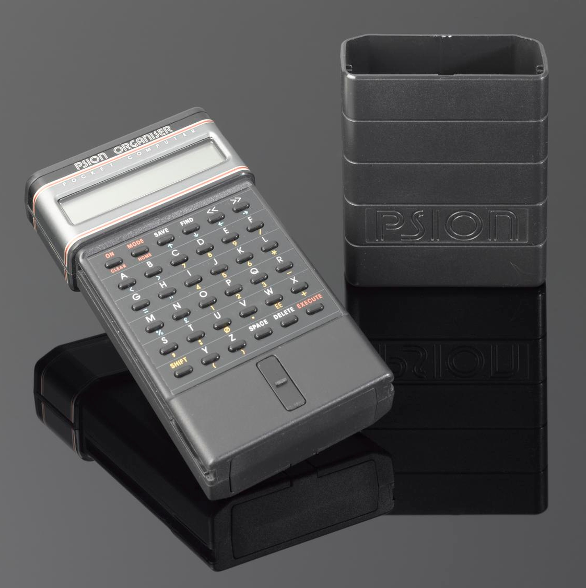
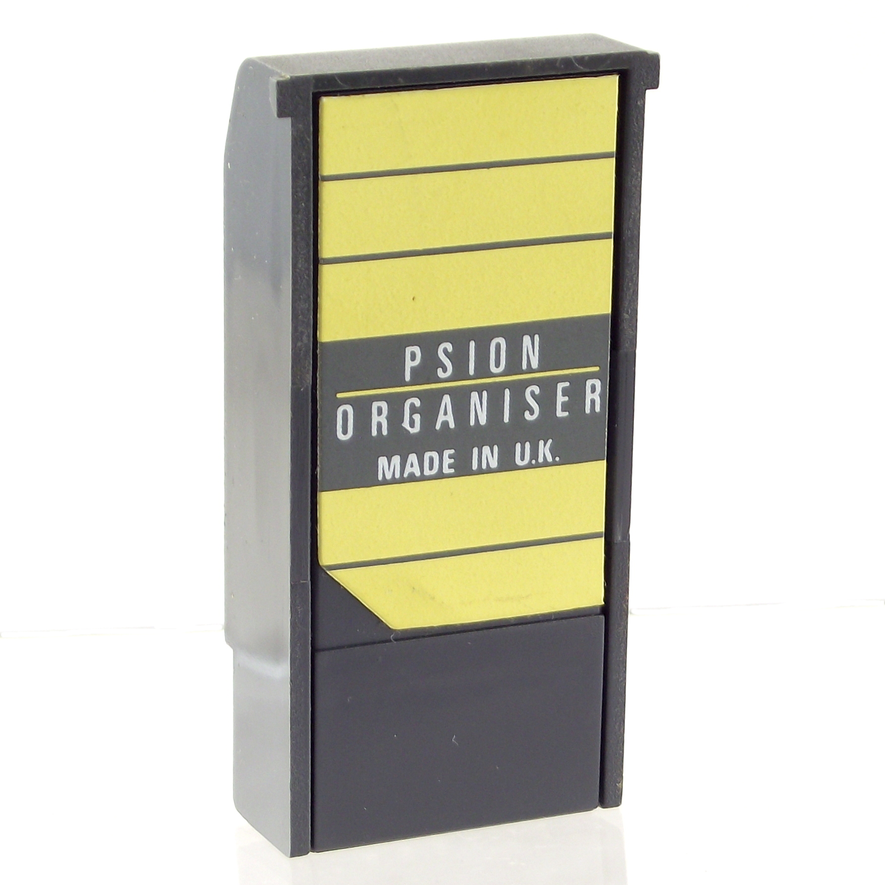

Psion Organiser I (1984)
Saving data meant zapping a write-once EPROM — and reusing it meant ultraviolet light

Overview
The Psion Organiser, launched in 1984 at £99 by the British software firm Psion (founded 1980 by David Potter), is widely credited as the world's first practical pocket computer and the direct ancestor of the PDA and the smartphone. It paired an 8-bit Hitachi 6301 CPU (about 0.9 MHz) with 4 KB of ROM and 2 KB of static RAM, a one-line LCD, and a 6×6 alphabetically-ordered keypad hidden under a spring-loaded hard plastic sliding cover. There was no operating system in the modern sense: applications — a flat-file database, a calculator, a clock — were fixed-function, and real time was kept by a hardware counter that woke the sleeping CPU every 17 minutes and 4 seconds to tick the clock forward.
Its strangest feature lives in storage. Programs and data lived on Datapaks — write-once EPROM cartridges that Psion patented. Sliding a Datapak into the top slot caused the device itself to program it by 'zapping' the EPROM with a high-voltage pulse; to reuse a pack you had to remove it and erase its EPROM window under an ultraviolet lamp. The line succeeded into the Organiser II (1986), which sold over 500,000 units and evolved into the EPOC then Symbian operating systems that would power a generation of smartphones.
Deep dive
Saving was not a silent commit. The Organiser burned each Datapak's data into the chip with a high-voltage programming pulse, and freeing a full pack meant physically pulling it out and holding its EPROM window under an ultraviolet light. A generation later, deleting a file became trivial; here, reclaiming space was a deliberate physical act performed in a different room. It is the museum's clearest 'write-once physical token' storage device.
The 6×6 keypad hides beneath a hard plastic sliding cover, so the machine reads as an unmarked block until the lid is pushed down over the keys. The input surface is deliberately concealed behind a physical shutter.
The Organiser was a genuinely software-platformed handheld a decade before the PDA boom, and its success seeded the EPOC/Symbian line. A surviving unit is catalogued by the Science Museum Group.
Team & pioneers
- Psion PLC maker, founded 1980 by David Potter
- David Potter Psion founder
- David Frost / Charles Davies key Organiser designers
Media
